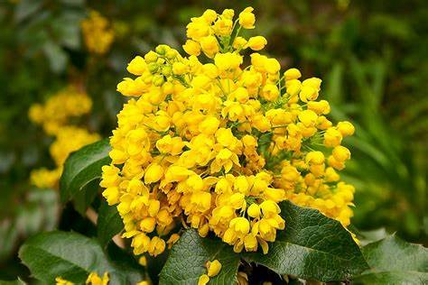
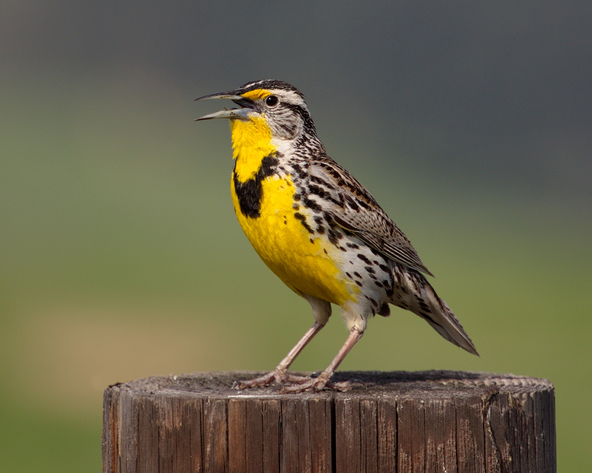
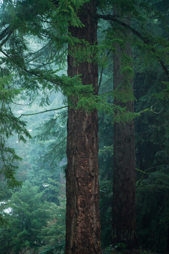

Following exploration by the Spanish and French, in the 17th and 18th centuries, Oregon was mapped by the Lewis and Clark expedition in their search for the Northwest Passage. Starting in the 1830s, many groups of pioneers traveled to the state on the famous Oregon Trail, and the U.S. began joint settlement of the area with the United Kingdom. In 1846, the border between U.S. and British territory was formally established at the 49th parallel – the part of the territory that was given to Britain would ultimately become part of Canada. Oregon was officially admitted to the union as a state on February 14th, 1859. Today, Portland, Oregon’s largest city, is considered one of the top cities in the nation in terms of quality of life, and the state is also known as one of the nation’s top producers of wine, boasting over 300 wineries.
| Date of Statehood | Capital | Population | Size |
|---|---|---|---|
| February 14, 1859 | Salem | 4.24 million | 98,379 square miles |
She Flies With Her Own Wings
Oregon Grape
Western Meadowlark
Douglas Fir
Interesting facts